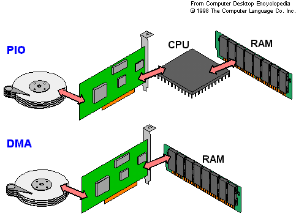

El Controlador DMA (Direct Memory Access) permite que ciertos dispositivos realicen transferencias de datos directamente hacia o desde la memoria principal sin requerir la intervención constante del CPU. Esta capacidad libera procesamiento, reduce tiempos de espera y optimiza el rendimiento en operaciones donde se manejan grandes volúmenes de información.
El chipset administra el funcionamiento del DMA estableciendo permisos, rutas de acceso y niveles de prioridad entre los dispositivos que compiten por la memoria. Gracias a esta coordinación, es posible transferir datos de manera continua sin comprometer la estabilidad del sistema.

El controlador DMA opera mediante canales que determinan qué dispositivo puede acceder a la memoria en un momento dado. Cada canal tiene parámetros propios, como dirección inicial, tamaño del bloque y tipo de operación, permitiendo un control preciso del flujo de datos.
Estos canales pueden configurarse para lectura, escritura o transferencia bidireccional. En sistemas modernos, los controladores pueden administrar múltiples canales simultáneamente, permitiendo que diferentes dispositivos trabajen al mismo tiempo sin generar interferencias.
El DMA puede funcionar en varios modos según la necesidad del dispositivo o el sistema. El modo por ráfagas transfiere bloques completos en una sola operación, mientras que el modo cíclico permite transferencias repetitivas ideales para dispositivos que generan o consumen datos constantemente.
También existe el modo “robapulsos”, donde el DMA toma ciclos del bus de forma intermitente sin detener por completo al CPU. Este enfoque mantiene el sistema operativo estable y permite coexistencia entre procesamiento general y transferencias intensivas.
Cuando un dispositivo solicita acceso DMA, el controlador negocia con el chipset el derecho a utilizar el bus del sistema. Una vez otorgado, el DMA lee o escribe directamente en memoria siguiendo los parámetros establecidos. Todo el proceso ocurre en paralelo al CPU, que puede continuar con otras tareas.
Al finalizar, el DMA genera una señal de interrupción para informar que la transferencia concluyó. Este mecanismo garantiza integridad de datos y permite que el CPU retome el flujo normal sin pérdida de información ni retrasos innecesarios.